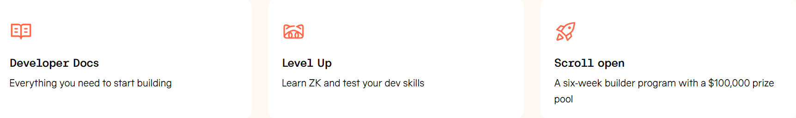

①
Choose pair (and verify tokens)
Pick the token pair you need and verify contracts (especially stables and meme tokens). Symbols are not identity.
This is a practical, safety-first guide to Scroll Swap in 2026: how token swaps work on Scroll DEXs, how to pick the best route (direct vs multi-hop), what you really pay in fees (gas + LP fee + price impact), how to set slippage, how to manage approvals safely, and how to troubleshoot failed swaps.
Pick the token pair you need and verify contracts (especially stables and meme tokens). Symbols are not identity.
A router may split across pools or go multi-hop (e.g., ETH→USDC→Token). Better routing reduces price impact.
Use realistic slippage. Approve only what you need (or revoke later) to reduce wallet risk.
After the swap, confirm the tx status and token transfers in a Scroll explorer. Wallet UIs can lag.
Scroll Swap means exchanging tokens on Scroll via DEX pools (AMMs) or routing aggregators. Your outcome depends on liquidity, route quality, and slippage settings. The most common problems are not “DEX broken” — they are low liquidity, too-tight slippage, bad token contracts, or unsafe approvals.
You already have funds on Scroll and want cheaper, faster trading compared to L1.
Thin pools amplify price impact. Small cap tokens can require higher slippage and careful contract verification.

These pairs cover the majority of swap intent on Scroll: base asset routing, stable conversions, and BTC exposure. In practice, many routes go through a “hub asset” (ETH/WETH or USDC) for best liquidity.
| Pair / Route | Why it’s popular | Notes |
|---|---|---|
| ETH ↔ WETH | Wrapping/unwrapping for DeFi routing | Expect minimal price impact; verify wrapper contract |
| ETH/WETH ↔ USDC | Main “hub” pair for pricing and stable entry/exit | Often best liquidity; common aggregator route |
| ETH/WETH ↔ USDT | Alternative stable hub for trading | Verify stable contract identity |
| USDC ↔ USDT | Stable rotation and arbitrage routing | Low slippage usually, but depends on pool depth |
| USDC ↔ DAI | Lending/strategy stable conversions | Depth varies by DEX; route via ETH if needed |
| ETH/WETH ↔ WBTC | BTC exposure inside Scroll DeFi | Verify the exact WBTC representation & liquidity |
Users often confuse “fees” with “LP fee.” Your all-in swap cost is usually: gas (Scroll execution) + pool LP fee + price impact (slippage from liquidity depth).
| Cost line | What it is | How to reduce it |
|---|---|---|
| Gas | Transaction fee on Scroll | Swap when network is calmer; avoid repeated failed attempts |
| LP fee | Pool fee paid to liquidity providers | Choose efficient pools/routers; compare quotes |
| Price impact | How much the swap moves the pool price | Use deeper pools; split orders; route through hub assets |
| MEV / execution risk | Bad fills in volatile/illiquid pairs | Avoid extreme slippage; use limit orders if available |
Slippage is your tolerance for price movement between quote and execution. Too low → swap fails. Too high → you can get a worse fill than expected.
| Market type | Typical slippage range | What to watch |
|---|---|---|
| Deep pairs (ETH/USDC, USDC/USDT) | Low | Should rarely fail; if it does, check congestion or route |
| Medium liquidity alt pairs | Moderate | Price impact can spike with size; split order if needed |
| Thin / volatile pairs | Higher (with caution) | High risk of bad fills; verify token contract & liquidity |
Keep this block clean with official chain resources, explorers, and security hygiene links. Replace placeholders with your chosen DEX references.
Scroll Swap is swapping tokens on the Scroll network using DEX liquidity pools or routing aggregators, typically to trade, enter/exit stablecoins, or interact with DeFi protocols.
Most common: ETH/WETH, ETH/WETH↔USDC, ETH/WETH↔USDT, USDC↔USDT, USDC↔DAI, and ETH/WETH↔WBTC (depending on liquidity and representation).
Common reasons: slippage too low, liquidity moved, price impact too high, not enough gas, or a route/pool issue. Start by checking the tx in the explorer.
Use the lowest slippage that reliably executes. Deep pairs can use low tolerance; thin/volatile pairs may need more, but higher slippage increases risk of a worse fill.
Usually: wrong network selected, wrong wallet account, or token not imported by contract address. If the explorer shows success, the swap is done.
Prefer limited approvals, revoke old allowances periodically, avoid unknown sites, and use a separate interaction wallet for day-to-day DeFi.